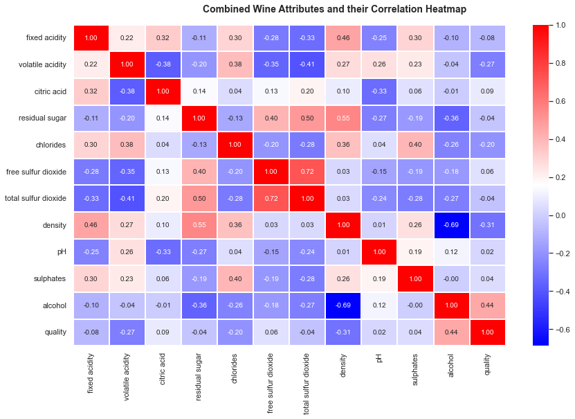

Wine Quality Analysis
Wine Quality Data Analysis
Importing Libraries
import pandas as pd
import matplotlib.pyplot as plt
import numpy as np
import seaborn as sns
sns.set()
Importing Datasets
df_red = pd.read_csv("https://archive.ics.uci.edu/ml/machine-learning-databases/wine-quality/winequality-red.csv", delimiter=";")
df_white = pd.read_csv("https://archive.ics.uci.edu/ml/machine-learning-databases/wine-quality/winequality-white.csv", delimiter=";")
Data Understanding
df_red.columns
Index(['fixed acidity', 'volatile acidity', 'citric acid', 'residual sugar',
'chlorides', 'free sulfur dioxide', 'total sulfur dioxide', 'density',
'pH', 'sulphates', 'alcohol', 'quality'],
dtype='object')
df_red.head()
| fixed acidity | volatile acidity | citric acid | residual sugar | chlorides | free sulfur dioxide | total sulfur dioxide | density | pH | sulphates | alcohol | quality | |
|---|---|---|---|---|---|---|---|---|---|---|---|---|
| 0 | 7.4 | 0.70 | 0.00 | 1.9 | 0.076 | 11.0 | 34.0 | 0.9978 | 3.51 | 0.56 | 9.4 | 5 |
| 1 | 7.8 | 0.88 | 0.00 | 2.6 | 0.098 | 25.0 | 67.0 | 0.9968 | 3.20 | 0.68 | 9.8 | 5 |
| 2 | 7.8 | 0.76 | 0.04 | 2.3 | 0.092 | 15.0 | 54.0 | 0.9970 | 3.26 | 0.65 | 9.8 | 5 |
| 3 | 11.2 | 0.28 | 0.56 | 1.9 | 0.075 | 17.0 | 60.0 | 0.9980 | 3.16 | 0.58 | 9.8 | 6 |
| 4 | 7.4 | 0.70 | 0.00 | 1.9 | 0.076 | 11.0 | 34.0 | 0.9978 | 3.51 | 0.56 | 9.4 | 5 |
- Fixed acidity : It indicates the amount of tartaric acid in wine and is measured in g/dm^3
- Volatile acidity : It indicates the amount of acetic acid in the wine. It is measured in g/dm^3
- Citric acid : It indicates the amount of citric acid in the wine. It is also measured in g/dm^3
- Residual sugar : It indicates the amount of sugar left in the wine after the fermentation process is done. It is also measured in g/dm^3
- Free sulfur dioxide : It measures the amount of sulfur dioxide (SO 2 ) in free 3 form. It is also measured in g/dm^3
- Total sulfur dioxide : It measures the total amount of SO 2 in the wine. This chemical works as an antioxidant and antimicrobial agent
- Density : It indicates the density of the wine and is measured in g/dm^3
- pH : It indicates the pH value of the wine. The range of value is between 0 to 14.0, which indicates very high acidity, and 14 indicates basic acidity
- Sulphates : It indicates the amount of potassium sulphate in the wine. It is also measured in g/dm^3
- Alcohol : It indicates the alcohol content in the wine
- Quality : It indicates the quality of the wine, which is ranged from 1 to 10. Here, the higher the value is, the better the wine
Descriptive Statistics
df_red.iloc[100:110]
| fixed acidity | volatile acidity | citric acid | residual sugar | chlorides | free sulfur dioxide | total sulfur dioxide | density | pH | sulphates | alcohol | quality | |
|---|---|---|---|---|---|---|---|---|---|---|---|---|
| 100 | 8.3 | 0.610 | 0.30 | 2.1 | 0.084 | 11.0 | 50.0 | 0.9972 | 3.40 | 0.61 | 10.2 | 6 |
| 101 | 7.8 | 0.500 | 0.30 | 1.9 | 0.075 | 8.0 | 22.0 | 0.9959 | 3.31 | 0.56 | 10.4 | 6 |
| 102 | 8.1 | 0.545 | 0.18 | 1.9 | 0.080 | 13.0 | 35.0 | 0.9972 | 3.30 | 0.59 | 9.0 | 6 |
| 103 | 8.1 | 0.575 | 0.22 | 2.1 | 0.077 | 12.0 | 65.0 | 0.9967 | 3.29 | 0.51 | 9.2 | 5 |
| 104 | 7.2 | 0.490 | 0.24 | 2.2 | 0.070 | 5.0 | 36.0 | 0.9960 | 3.33 | 0.48 | 9.4 | 5 |
| 105 | 8.1 | 0.575 | 0.22 | 2.1 | 0.077 | 12.0 | 65.0 | 0.9967 | 3.29 | 0.51 | 9.2 | 5 |
| 106 | 7.8 | 0.410 | 0.68 | 1.7 | 0.467 | 18.0 | 69.0 | 0.9973 | 3.08 | 1.31 | 9.3 | 5 |
| 107 | 6.2 | 0.630 | 0.31 | 1.7 | 0.088 | 15.0 | 64.0 | 0.9969 | 3.46 | 0.79 | 9.3 | 5 |
| 108 | 8.0 | 0.330 | 0.53 | 2.5 | 0.091 | 18.0 | 80.0 | 0.9976 | 3.37 | 0.80 | 9.6 | 6 |
| 109 | 8.1 | 0.785 | 0.52 | 2.0 | 0.122 | 37.0 | 153.0 | 0.9969 | 3.21 | 0.69 | 9.3 | 5 |
df_red.dtypes
fixed acidity float64
volatile acidity float64
citric acid float64
residual sugar float64
chlorides float64
free sulfur dioxide float64
total sulfur dioxide float64
density float64
pH float64
sulphates float64
alcohol float64
quality int64
dtype: object
df_red.describe()
| fixed acidity | volatile acidity | citric acid | residual sugar | chlorides | free sulfur dioxide | total sulfur dioxide | density | pH | sulphates | alcohol | quality | |
|---|---|---|---|---|---|---|---|---|---|---|---|---|
| count | 1599.000000 | 1599.000000 | 1599.000000 | 1599.000000 | 1599.000000 | 1599.000000 | 1599.000000 | 1599.000000 | 1599.000000 | 1599.000000 | 1599.000000 | 1599.000000 |
| mean | 8.319637 | 0.527821 | 0.270976 | 2.538806 | 0.087467 | 15.874922 | 46.467792 | 0.996747 | 3.311113 | 0.658149 | 10.422983 | 5.636023 |
| std | 1.741096 | 0.179060 | 0.194801 | 1.409928 | 0.047065 | 10.460157 | 32.895324 | 0.001887 | 0.154386 | 0.169507 | 1.065668 | 0.807569 |
| min | 4.600000 | 0.120000 | 0.000000 | 0.900000 | 0.012000 | 1.000000 | 6.000000 | 0.990070 | 2.740000 | 0.330000 | 8.400000 | 3.000000 |
| 25% | 7.100000 | 0.390000 | 0.090000 | 1.900000 | 0.070000 | 7.000000 | 22.000000 | 0.995600 | 3.210000 | 0.550000 | 9.500000 | 5.000000 |
| 50% | 7.900000 | 0.520000 | 0.260000 | 2.200000 | 0.079000 | 14.000000 | 38.000000 | 0.996750 | 3.310000 | 0.620000 | 10.200000 | 6.000000 |
| 75% | 9.200000 | 0.640000 | 0.420000 | 2.600000 | 0.090000 | 21.000000 | 62.000000 | 0.997835 | 3.400000 | 0.730000 | 11.100000 | 6.000000 |
| max | 15.900000 | 1.580000 | 1.000000 | 15.500000 | 0.611000 | 72.000000 | 289.000000 | 1.003690 | 4.010000 | 2.000000 | 14.900000 | 8.000000 |
Data Wrangling
df_red.info()
<class 'pandas.core.frame.DataFrame'>
RangeIndex: 1599 entries, 0 to 1598
Data columns (total 12 columns):
# Column Non-Null Count Dtype
--- ------ -------------- -----
0 fixed acidity 1599 non-null float64
1 volatile acidity 1599 non-null float64
2 citric acid 1599 non-null float64
3 residual sugar 1599 non-null float64
4 chlorides 1599 non-null float64
5 free sulfur dioxide 1599 non-null float64
6 total sulfur dioxide 1599 non-null float64
7 density 1599 non-null float64
8 pH 1599 non-null float64
9 sulphates 1599 non-null float64
10 alcohol 1599 non-null float64
11 quality 1599 non-null int64
dtypes: float64(11), int64(1)
memory usage: 150.0 KB
df_red.isnull().sum()
fixed acidity 0
volatile acidity 0
citric acid 0
residual sugar 0
chlorides 0
free sulfur dioxide 0
total sulfur dioxide 0
density 0
pH 0
sulphates 0
alcohol 0
quality 0
dtype: int64
Analyzing Red Wine
sns.set(rc={'figure.figsize': (14, 8)})
sns.countplot(df_red['quality'])
plt.show()
/home/bytadit/anaconda3/lib/python3.9/site-packages/seaborn/_decorators.py:36: FutureWarning: Pass the following variable as a keyword arg: x. From version 0.12, the only valid positional argument will be `data`, and passing other arguments without an explicit keyword will result in an error or misinterpretation.
warnings.warn(
Finding correlated columns
sns.pairplot(df_red)
<seaborn.axisgrid.PairGrid at 0x7fd43120dd00>

sns.heatmap(df_red.corr(), annot=True, fmt='.2f', linewidths=2)
<AxesSubplot:>
Since we are focusing on the quality column, the quality column has a positive correlation with alcohol, sulfates, residual sugar, citric acid, and fixed acidity.
sns.distplot(df_red['alcohol'])
/home/bytadit/anaconda3/lib/python3.9/site-packages/seaborn/distributions.py:2619: FutureWarning: `distplot` is a deprecated function and will be removed in a future version. Please adapt your code to use either `displot` (a figure-level function with similar flexibility) or `histplot` (an axes-level function for histograms).
warnings.warn(msg, FutureWarning)
<AxesSubplot:xlabel='alcohol', ylabel='Density'>
we can see that alcohol distribution is positively skewed with the quality of the red wine.
from scipy.stats import skew
skew(df_red['alcohol'])
0.8600210646566755
The output verifies that alcohol is positively skewed. That gives deeper insight into the alcohol column
Note that we can verify each column and try to see their skewness, distribution, and correlation with respect to the other column. This is generally essential as we are going through the process of feature engineering.
Alcohol versus quality
Let’s see how the quality of wine varies with respect to alcohol concentration. This can be done using the box plot.
sns.boxplot(x='quality', y='alcohol', data = df_red)
<AxesSubplot:xlabel='quality', ylabel='alcohol'>
We can remove the outliers by passing an argument, showfliers=False ,
sns.boxplot(x='quality', y='alcohol', data = df_red, showfliers=False)
<AxesSubplot:xlabel='quality', ylabel='alcohol'>
Note that it seems that as the quality of wine increases, so does the alcohol concentration. That would make sense, right? The higher the alcohol concentration is, the higher the quality of the wine.
Alcohol versus pH
From Heatmap, we already know they are weakly positively correlated
sns.jointplot(x='alcohol',y='pH',data=df_red, kind='reg')
<seaborn.axisgrid.JointGrid at 0x7fd423174460>
This screenshot shows that alcohol is weakly positively related to the pH values. Moreover, the regression line is depicted in the screenshot, illustrating the correlation between them.
We can quantify the correlation using Pearson regression from scipy.stats
from scipy.stats import pearsonr
def get_correlation(column1, column2, df):
pearson_corr, p_value = pearsonr(df[column1], df[column2])
print("Correlation between {} and {} is {}".format(column1,
column2, pearson_corr))
print("P-value of this correlation is {}".format(p_value))
And we can use the preceding method to see the correlation between any two columns
get_correlation('alcohol','pH', df_red)
Correlation between alcohol and pH is 0.20563250850549816
P-value of this correlation is 9.96449774146556e-17
Note that, this is approximately the same value that is shown in heatmap. Now we know different ways in which you can check how strongly or weakly two or more columns are related.
Analyzing white wine
df_white.head()
| fixed acidity | volatile acidity | citric acid | residual sugar | chlorides | free sulfur dioxide | total sulfur dioxide | density | pH | sulphates | alcohol | quality | |
|---|---|---|---|---|---|---|---|---|---|---|---|---|
| 0 | 7.0 | 0.27 | 0.36 | 20.7 | 0.045 | 45.0 | 170.0 | 1.0010 | 3.00 | 0.45 | 8.8 | 6 |
| 1 | 6.3 | 0.30 | 0.34 | 1.6 | 0.049 | 14.0 | 132.0 | 0.9940 | 3.30 | 0.49 | 9.5 | 6 |
| 2 | 8.1 | 0.28 | 0.40 | 6.9 | 0.050 | 30.0 | 97.0 | 0.9951 | 3.26 | 0.44 | 10.1 | 6 |
| 3 | 7.2 | 0.23 | 0.32 | 8.5 | 0.058 | 47.0 | 186.0 | 0.9956 | 3.19 | 0.40 | 9.9 | 6 |
| 4 | 7.2 | 0.23 | 0.32 | 8.5 | 0.058 | 47.0 | 186.0 | 0.9956 | 3.19 | 0.40 | 9.9 | 6 |
df_white.info()
<class 'pandas.core.frame.DataFrame'>
RangeIndex: 4898 entries, 0 to 4897
Data columns (total 12 columns):
# Column Non-Null Count Dtype
--- ------ -------------- -----
0 fixed acidity 4898 non-null float64
1 volatile acidity 4898 non-null float64
2 citric acid 4898 non-null float64
3 residual sugar 4898 non-null float64
4 chlorides 4898 non-null float64
5 free sulfur dioxide 4898 non-null float64
6 total sulfur dioxide 4898 non-null float64
7 density 4898 non-null float64
8 pH 4898 non-null float64
9 sulphates 4898 non-null float64
10 alcohol 4898 non-null float64
11 quality 4898 non-null int64
dtypes: float64(11), int64(1)
memory usage: 459.3 KB
Red wine versus white wine
Our output class is the quality column. Based on that column, we can try to find the average quality
print("white mean = ",df_white["quality"].mean())
print("red mean =",df_red["quality"].mean())
white mean = 5.87790935075541
red mean = 5.6360225140712945
Adding a new attribute
df_white['wine_category'] = 'white'
df_red['wine_category'] = 'red'
let’s see what are the unique values of the column quality in both types of wines
print('RED WINE: List of "quality"', sorted(df_red['quality'].unique()))
print('WHITE WINE: List of "quality"', sorted(df_white['quality'].unique()))
RED WINE: List of "quality" [3, 4, 5, 6, 7, 8]
WHITE WINE: List of "quality" [3, 4, 5, 6, 7, 8, 9]
Converting into a categorical column
Although the quality column is numerical, here, we are interested in taking quality as the class.
df_red['quality_label'] = df_red['quality'].apply(lambda value: ('low' if value <= 5 else 'medium') if value <= 7 else 'high')
df_red['quality_label'] = pd.Categorical(df_red['quality_label'], categories=['low', 'medium', 'high'])
df_white['quality_label'] = df_white['quality'].apply(lambda value: ('low' if value <= 5 else 'medium') if value <= 7 else 'high')
df_white['quality_label'] = pd.Categorical(df_white['quality_label'], categories=['low', 'medium', 'high'])
print(df_white['quality_label'].value_counts())
df_red['quality_label'].value_counts()
medium 3078
low 1640
high 180
Name: quality_label, dtype: int64
medium 837
low 744
high 18
Name: quality_label, dtype: int64
Concatenating dataframes
df_wines = pd.concat([df_red, df_white])
Let’s also re-shuffle the rows so that it randomizes the data points:
df_wines = df_wines.sample(frac=1.0, random_state=42).reset_index(drop=True)
Note that the drop=True argument resets the indexes to the default integer index.
df_wines.head(10)
| fixed acidity | volatile acidity | citric acid | residual sugar | chlorides | free sulfur dioxide | total sulfur dioxide | density | pH | sulphates | alcohol | quality | wine_category | quality_label | |
|---|---|---|---|---|---|---|---|---|---|---|---|---|---|---|
| 0 | 7.0 | 0.17 | 0.74 | 12.8 | 0.045 | 24.0 | 126.0 | 0.99420 | 3.26 | 0.38 | 12.2 | 8 | white | high |
| 1 | 7.7 | 0.64 | 0.21 | 2.2 | 0.077 | 32.0 | 133.0 | 0.99560 | 3.27 | 0.45 | 9.9 | 5 | red | low |
| 2 | 6.8 | 0.39 | 0.34 | 7.4 | 0.020 | 38.0 | 133.0 | 0.99212 | 3.18 | 0.44 | 12.0 | 7 | white | medium |
| 3 | 6.3 | 0.28 | 0.47 | 11.2 | 0.040 | 61.0 | 183.0 | 0.99592 | 3.12 | 0.51 | 9.5 | 6 | white | medium |
| 4 | 7.4 | 0.35 | 0.20 | 13.9 | 0.054 | 63.0 | 229.0 | 0.99888 | 3.11 | 0.50 | 8.9 | 6 | white | medium |
| 5 | 7.2 | 0.53 | 0.14 | 2.1 | 0.064 | 15.0 | 29.0 | 0.99323 | 3.35 | 0.61 | 12.1 | 6 | red | medium |
| 6 | 7.5 | 0.27 | 0.31 | 17.7 | 0.051 | 33.0 | 173.0 | 0.99900 | 3.09 | 0.64 | 10.2 | 5 | white | low |
| 7 | 6.8 | 0.11 | 0.27 | 8.6 | 0.044 | 45.0 | 104.0 | 0.99454 | 3.20 | 0.37 | 9.9 | 6 | white | medium |
| 8 | 9.0 | 0.44 | 0.49 | 2.4 | 0.078 | 26.0 | 121.0 | 0.99780 | 3.23 | 0.58 | 9.2 | 5 | red | low |
| 9 | 7.1 | 0.23 | 0.30 | 2.6 | 0.034 | 62.0 | 148.0 | 0.99121 | 3.03 | 0.56 | 11.3 | 7 | white | medium |
Grouping columns
Let’s use the combined dataframe and group them using the columns, alcohol , density , pH , and quality .
In the preceding code snippet, first, we created a subset of attributes that we are interested in. Then, we created three different dataframes for low-quality wine, medium-quality wine, and high-quality wine. Finally, we concatenated them
subset_attr = ['alcohol', 'density', 'pH', 'quality']
low = round(df_wines[df_wines['quality_label'] == 'low'][subset_attr].describe(), 2)
medium = round(df_wines[df_wines['quality_label'] == 'medium'][subset_attr].describe(), 2)
high = round(df_wines[df_wines['quality_label'] == 'high'][subset_attr].describe(), 2)
pd.concat([low, medium, high], axis=1, keys=['Low Quality Wine', 'Medium Quality Wine', 'High Quality Wine'])
| Low Quality Wine | Medium Quality Wine | High Quality Wine | ||||||||||
|---|---|---|---|---|---|---|---|---|---|---|---|---|
| alcohol | density | pH | quality | alcohol | density | pH | quality | alcohol | density | pH | quality | |
| count | 2384.00 | 2384.00 | 2384.00 | 2384.00 | 3915.00 | 3915.00 | 3915.00 | 3915.00 | 198.00 | 198.00 | 198.00 | 198.00 |
| mean | 9.87 | 1.00 | 3.21 | 4.88 | 10.81 | 0.99 | 3.22 | 6.28 | 11.69 | 0.99 | 3.23 | 8.03 |
| std | 0.84 | 0.00 | 0.16 | 0.36 | 1.20 | 0.00 | 0.16 | 0.45 | 1.27 | 0.00 | 0.16 | 0.16 |
| min | 8.00 | 0.99 | 2.74 | 3.00 | 8.40 | 0.99 | 2.72 | 6.00 | 8.50 | 0.99 | 2.88 | 8.00 |
| 25% | 9.30 | 0.99 | 3.11 | 5.00 | 9.80 | 0.99 | 3.11 | 6.00 | 11.00 | 0.99 | 3.13 | 8.00 |
| 50% | 9.60 | 1.00 | 3.20 | 5.00 | 10.80 | 0.99 | 3.21 | 6.00 | 12.00 | 0.99 | 3.23 | 8.00 |
| 75% | 10.40 | 1.00 | 3.31 | 5.00 | 11.70 | 1.00 | 3.33 | 7.00 | 12.60 | 0.99 | 3.33 | 8.00 |
| max | 14.90 | 1.00 | 3.90 | 5.00 | 14.20 | 1.04 | 4.01 | 7.00 | 14.00 | 1.00 | 3.72 | 9.00 |
Univariate Analysis
import matplotlib.pyplot as plt
from mpl_toolkits.mplot3d import Axes3D
%matplotlib inline
The simplest way to visualize the numeric data and their distribution is by using a histogram. Let’s plot the histogram here
fig = df_wines.hist(bins=15, color='fuchsia', edgecolor='darkmagenta',
linewidth=1.0, xlabelsize=10, ylabelsize=10, xrot=45, yrot=0,
figsize=(10,9), grid=False)
plt.tight_layout(rect=(0, 0, 1.5, 1.5))
Note that we have used the tight_layout() method to keep the graph combined.
Multivariate Analysis
We are going to use the same heatmap diagram to perform multivariate analysis:
fig, (ax) = plt.subplots(1, 1, figsize=(14,8))
hm = sns.heatmap(df_wines.corr(), ax=ax, cmap="bwr", annot=True, fmt='.2f', linewidths=.05)
fig.subplots_adjust(top=0.93)
fig.suptitle('Combined Wine Attributes and their Correlation Heatmap', fontsize=14, fontweight='bold')
Text(0.5, 0.98, 'Combined Wine Attributes and their Correlation Heatmap')

Note the preceding screenshot is similar to previous heatmap and should be interpreted in the same way. The only difference, in this case, is that we have performed multivariate analysis on the combined dataframe.
Discrete categorical attributes
We have one discrete categorical column in our dataframe, wine_category
fig = plt.figure(figsize=(16, 8))
sns.countplot(data=df_wines, x="quality", hue="wine_category")
<AxesSubplot:xlabel='quality', ylabel='count'>
3-D visualization
fig = plt.figure(figsize=(16, 12))
ax = fig.add_subplot(111, projection='3d')
xscale = df_wines['residual sugar']
yscale = df_wines['free sulfur dioxide']
zscale = df_wines['total sulfur dioxide']
ax.scatter(xscale, yscale, zscale, s=50, alpha=0.6, edgecolors='w')
ax.set_xlabel('Residual Sugar')
ax.set_ylabel('free sulfur dioxide')
ax.set_zlabel('Total sulfur dioxide')
plt.show()
The figure shows that three variables show a positive correlation with respect to one another.
fig = plt.figure(figsize=(16, 12))
plt.scatter(x = df_wines['fixed acidity'], y = df_wines['free sulfur dioxide'], s = df_wines['total sulfur dioxide'] * 2, alpha=0.4, edgecolors='w')
plt.xlabel('Fixed Acidity')
plt.ylabel('free sulfur dioxide')
plt.title('Wine free sulfur dioxide Content - Fixed Acidity - total sulfur dioxide', y=1.05)
Text(0.5, 1.05, 'Wine free sulfur dioxide Content - Fixed Acidity - total sulfur dioxide')
the size of the circles denotes the third variable. In this case, the larger the radius of the circle is, the higher the value of residual sugar. So, if you look carefully, you will notice most of the higher circles are located between the x axis with values of 4 and 10 and with the y axis with values between 25 and 150.
Model development and evaluation
from sklearn.linear_model import LogisticRegression
from sklearn.svm import LinearSVC,SVC
from sklearn.neighbors import KNeighborsClassifier
from sklearn.ensemble import RandomForestClassifier,GradientBoostingClassifier,AdaBoostClassifier
from sklearn.tree import DecisionTreeClassifier
from sklearn.naive_bayes import GaussianNB
from sklearn.model_selection import train_test_split,cross_validate
from sklearn.preprocessing import MinMaxScaler,StandardScaler,LabelEncoder
from sklearn.metrics import accuracy_score,precision_score,recall_score,f1_score
Note that we are going to use the combined dataframe. Next, we are going to encode the categorical values for the quality_label column. We will encode the values so that all of the low values will be changed to 0, the medium values will be changed to 1, and the high values will be changed to 2.
Encoding
label_quality = LabelEncoder()
df_wines['quality_label'] = label_quality.fit_transform(df_wines['quality_label'])
Modeling
Now, let’s split our dataset into a training set and test set. We will use 70% of the dataset as the training set and the remaining 30% as the test set
x_train,x_test,y_train,y_test=train_test_split(df_wines.drop(['quality','wine_category'],axis=1),df_wines['quality_label'],test_size=0.30,random_state=42)
In the preceding code, we no longer need the quality and wine_category columns, so we drop them. Next, we take 30% of the data as the test set. We can do that by simply passing the test_size = 0.30 argument.
Next, we create the model. Note that we could build the model individually for each of the algorithms we listed above. Instead, here we are going to list them and loop over each of them and compute the accuracy.
models=[LogisticRegression(),
LinearSVC(),
SVC(kernel='rbf'),
KNeighborsClassifier(),
RandomForestClassifier(),
DecisionTreeClassifier(),
GradientBoostingClassifier(),
GaussianNB()
]
model_names=['LogisticRegression','LinearSVM','rbfSVM',
'KNearestNeighbors', 'RandomForestClassifier', 'DecisionTree',
'GradientBoostingClassifier', 'GaussianNB'
]
Next, we will loop over each model, create a model, and then evaluate the accuracy.
acc=[]
eval_acc={}
for model in range(len(models)):
classification_model=models[model]
classification_model.fit(x_train,y_train)
pred=classification_model.predict(x_test)
acc.append(accuracy_score(pred,y_test))
eval_acc={'Modelling Algorithm':model_names,'Accuracy':acc}
eval_acc
/home/bytadit/anaconda3/lib/python3.9/site-packages/sklearn/linear_model/_logistic.py:814: ConvergenceWarning: lbfgs failed to converge (status=1):
STOP: TOTAL NO. of ITERATIONS REACHED LIMIT.
Increase the number of iterations (max_iter) or scale the data as shown in:
https://scikit-learn.org/stable/modules/preprocessing.html
Please also refer to the documentation for alternative solver options:
https://scikit-learn.org/stable/modules/linear_model.html#logistic-regression
n_iter_i = _check_optimize_result(
/home/bytadit/anaconda3/lib/python3.9/site-packages/sklearn/svm/_base.py:1206: ConvergenceWarning: Liblinear failed to converge, increase the number of iterations.
warnings.warn(
{'Modelling Algorithm': ['LogisticRegression',
'LinearSVM',
'rbfSVM',
'KNearestNeighbors',
'RandomForestClassifier',
'DecisionTree',
'GradientBoostingClassifier',
'GaussianNB'],
'Accuracy': [0.9641025641025641,
0.9723076923076923,
0.6051282051282051,
0.6912820512820513,
1.0,
1.0,
1.0,
1.0]}
Let’s create a dataframe of the accuracy and show it in a bar chart:
acc_table=pd.DataFrame(eval_acc)
acc_table = acc_table.sort_values(by='Accuracy', ascending=[False])
acc_table
| Modelling Algorithm | Accuracy | |
|---|---|---|
| 4 | RandomForestClassifier | 1.000000 |
| 5 | DecisionTree | 1.000000 |
| 6 | GradientBoostingClassifier | 1.000000 |
| 7 | GaussianNB | 1.000000 |
| 1 | LinearSVM | 0.972308 |
| 0 | LogisticRegression | 0.964103 |
| 3 | KNearestNeighbors | 0.691282 |
| 2 | rbfSVM | 0.605128 |
sns.barplot(y='Modelling Algorithm',x='Accuracy',data=acc_table)
<AxesSubplot:xlabel='Accuracy', ylabel='Modelling Algorithm'>